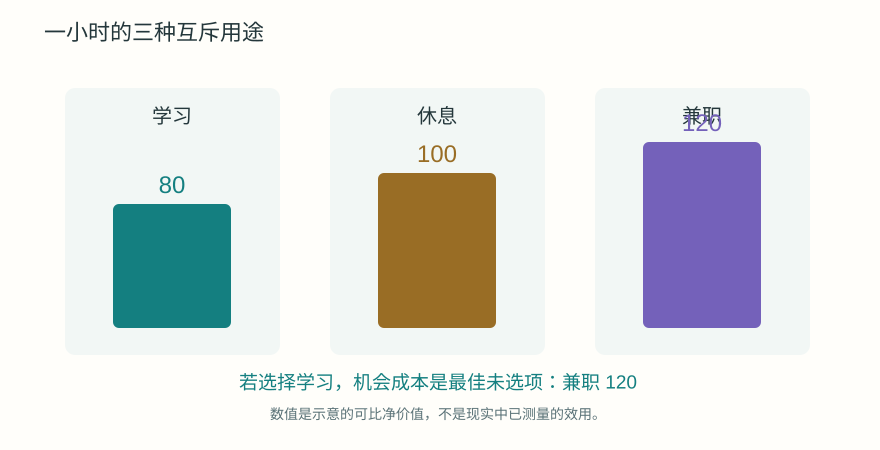
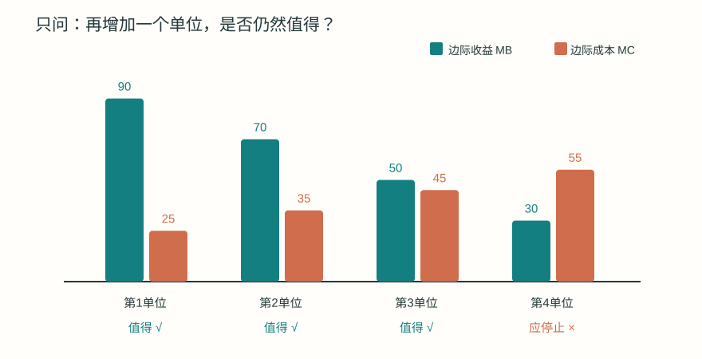

CHAPTER 01 · MICROECONOMICS
经济学思维：稀缺与选择
每个选择，都有一件没有做成的事。
稀缺是约束，不是贫穷
今天只剩一小时空闲。你可以用来复习、休息，也可以兼职。三件事情都可能有价值，但无法同时完成。这种想要完成的目标多于可同时使用的资源，就是稀缺。经济学所关心的，不只是钱的数量，而是人们在时间、注意力、资本和土地等约束下如何做出选择。
识别经济问题时先问三个问题：可行选项是什么？什么资源不能重复使用？一个选择会迫使我们放弃哪个替代行动？这些问题比抽象地说“资源有限、欲望无限”更容易进入可检验的分析。

机会成本是最佳未选项
假设在共同的教学尺度下，学习的净价值为 80，休息为 100，兼职为 120。选择学习的机会成本是没有选择的最佳可行方案——兼职的价值 120，而不是休息和兼职之和 220。因为同一小时本来就不能既休息又兼职，它们并非一个可以同时完成的替代方案。
现实决策未必能把快乐、学习和劳动都放在统一货币尺度下。但可以先列出相关的现金流与非金钱后果，分别比较，再说明无法定量的部分。机会成本不是随意编出来的损失，而是具体可行的反事实机会。
边际思维：再多投入一单位值不值
现在假设选择不再是“一整小时做什么”，而是可以逐单位增加投入。四次增加的边际收益分别是 90、70、50、30；边际成本分别为 25、35、45、55。前面三个单位的新增净收益都是正的，到了第四单位，额外成本已经超过收益。

| 单位 | 边际收益 MB | 边际成本 MC | 新增净收益 |
|---|---|---|---|
| 1 | 90 | 25 | +65 |
| 2 | 70 | 35 | +35 |
| 3 | 50 | 45 | +5 |
| 4 | 30 | 55 | −25 |
这一推理只在增量可以比较、各单位可以单独选择时直接成立。如果存在不可分投资、启动成本或组合间相互依赖，需要比较所有可行方案的总净收益，不能机械地套用 MB=MC。
沉没成本与理性选择的界限
电影票已经购买且无法退款，看了半小时发现电影不好看。该不该离场？不能退款的票款对现在的选择已经无法改变，属于沉没成本。应该比较的是：继续观看的未来收益，与把剩余时间用于其他活动的收益。若能部分退款、留下能履行社交承诺或避免新的损失，这些可改变的后果仍必须考虑。
理性人假设可以理解为一套基准模型：行动者在约束下对可行方案进行一致的比较。它不是说人总能掌握所有信息，也不是说真实人类没有习惯、偏差与社会偏好。模型有助于给出可检验的预测，偏离模型的行为则需要进一步解释。
把经济直觉变成一个检查清单
依次明确：约束是什么？最佳可行替代方案是什么？未来可改变的成本和收益有哪些？继续增加一个单位的边际净收益是否仍为正？哪些支出只发生在过去，且不会因现在行动而改变？
第三小时额外收益 50、额外成本 45，第四小时额外收益 30、额外成本 55，而前两小时也值得投入。该投入几小时？
展开解析
在该可分的假设下，前三小时边际净收益均为正，第四小时为 −25，应选择三小时。如果存在一个必须支付的固定进入成本，应另算总净收益。
个体在资源约束下做选择，整个社会也一样。下一章用 PPF 表示两类商品之间的生产取舍。
交互实验：边际决策的停止点
逐单位比较边际收益与边际成本
沿用正文的假设值（教学示例）：四单位的边际收益为 90、70、50、30 元，边际成本为 25、35、45、55 元。拖动滑块改变已投入的单位数，观察累计净收益与下一单位的取舍。
投入 3 单位：累计净收益 105 元，第 3 单位的边际净收益 5 元；下一单位边际净收益 -25 元，已不值得追加。
默认参数可独立阅读；无 JavaScript 时仍可阅读上方静态图与正文。
参考资料和数值说明
本章图形与所有数值均为独立构造的教学示例，不代表实测数据，也未复制教材插图。概念主要与以下开放教材交叉核对：